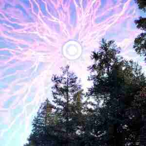

The Great Siphoning event occurred in April, 2021, where this universe was siphoned of its energy and resources by an Unknown Entity. All the catastrophes that had befallen everywhere were a result of this universe-scale event.
When The Great Siphoning began, dim, purple tendrils began appearing in the night sky. These tendrils target all the celestial bodies in the universe and would siphon energy from them. Over the next few weeks, more would appear and could be visible during the day. In the last hours, a bright ring in the epicenter began forming, indicating that one of those tendrils was being directed straight towards us.
After 75% of this universe's resources were harvested, everything was left in shambles. Planets, Stars, and Galaxies cannot thrive and will eventually decay due to a lack of resources. Every living creature, big and small, fell victim to this and is now left in a half-alive, half-dead state. Everyone remains biologically alive, but is mostly dead psychologically.
